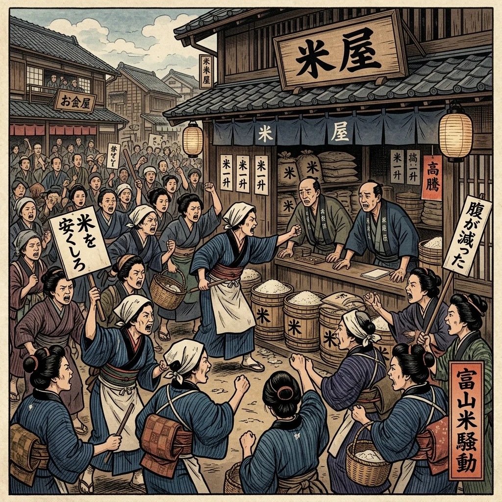

27. 第一次世界大戦とロシア革命
20世紀の初め、ヨーロッパの同盟関係の対立をきっかけに、人類史上最大の世界中を巻き込む大戦争が始まりました。日本はこの戦争にどう関わり、国内ではどのような変化が起きたのでしょうか。今回は、第一次世界大戦と世界初の社会主義革命である「ロシア革命」、そして日本で本格的な民主政治の夜明けとなった「原敬内閣」の誕生を解説します！
1. 第一次世界大戦の勃発と日本の参戦（1914年）
ヨーロッパでは、イギリス・フランス・ロシアの「三国協商」と、ドイツ・オーストリア・イタリアの「三国同盟」が激しく対立していました。
1914年、サライェヴォ事件（オーストリア皇太子夫妻が暗殺された事件）をきっかけに、第一次世界大戦（だいいちじせかいたいせん）が勃発しました。新兵器の戦車、毒ガス、潜水艦、飛行機などが使われ、世界中が巻き込まれる大総力戦となりました。
① 二十一カ条の要求（1915年）
日本は、同盟を結んでいたイギリス側（連合国側）として参戦しました。日本はアジアにおけるドイツの拠点であった中国の山東半島（青島）や、太平洋のドイツ領赤道以北の群島を瞬く間に占領しました。
1915年、ヨーロッパ諸国が戦争でアジアに手を出せない隙を狙って、日本は中国の袁世凱（えんせいがい）政府に対し、山東省のドイツ権益を引き継ぐことや旅順・大連の期限延長などを求める『二十一カ条の要求』を突きつけ、その大半を無理やり認めさせました。これにより、中国国内では激しい抗日（日本に反対する）運動が巻き起こりました。
② 大戦景気（たいせんけいき）
ヨーロッパへの軍需品や武器などの輸出が急増し、アジア市場で欧米製品がなくなったため日本の輸出が急拡大しました。造船・製鉄業が特に大繁栄し、一晩で大富豪になる成金（なりきん）が出現。日本は長年の借金国（債務国）から、世界有数の貸付国（債権国）へと大成長しました。
図1：戦車や毒ガスなどの近代兵器が初めて実戦投入された「第一次世界大戦」のイメージ
2. ロシア革命（1917年）とソ連の成立
大戦中、激しい戦闘と食料不足に苦しんだロシア帝国では、民衆の怒りが爆発しました。
1917年、レーニンが率いる労働者や兵士たちが立ち上がり、世界で初めての社会主義革命であるロシア革命を起こしました。皇帝は退位し、ロシアは第一次世界大戦から離脱。1922年には、土地や工場を国のもの（国有）とする世界初の社会主義国家である「ソビエト社会主義共和国連邦（ソ連）」が正式に成立しました。
3. シベリア出兵と米騒動（1918年）
ロシアの社会主義革命が他国に広がることを恐れた日本やアメリカなどの列強は、革命政府を倒すためにシベリアへ軍隊を派遣することを決定しました。これがシベリア出兵です。
① 米騒動（こめそうどう）
シベリア出兵の決定により、日本国内では「軍隊用の米が大量に買い占められて値上がりするだろう」と見越した商人が米を買い占め、米の価格が急騰しました。
1918年、富山県の魚津などの漁村で、主婦たちが「米を安く売れ！」と米屋や地主に詰め寄る運動を起こしました。このニュースが新聞で報道されると、怒った民衆の暴動が全国の主要都市（京都・大阪・名古屋・東京など）に広がり、政府は警察や軍隊を動かして軍隊を派遣し、捕縛・鎮圧せざるを得なくなりました。これを米騒動と呼びます。

図2：米の価格高騰に抗議して米屋に詰め寄った「米騒動（富山県）」のイメージ
4. 原敬（はらたかし）と初の「本格的政党内閣」
米騒動を力で鎮圧した政府は強い批判を浴び、寺内正毅内閣は総辞職しました。次に首相となったのが、立憲政友会の総裁であった原敬（はらたかし）です。
原は、陸軍・海軍・外務大臣以外のすべての閣僚（大臣）を衆議院の第一党の国会議員で固める、日本初の本格的な政党内閣（せいとうないかく）を組織しました（1918年）。
原は、これまでの薩摩・長州出身の華族ではなく、豪農の出身で爵位を持たない衆議院議員であったため、国民からは親しみを込めて「平民宰相（へいみんさいしょう）」と呼ばれ、民主主義政治への期待が一気に高まりました。
🔥 この単元のテスト対策・暗記のコツ
-
★
第一次世界大戦（1914年）と二十一カ条の要求（1915年）：
・1914年開戦：「いやよ（1914）大戦開戦へ」
・日本は日英同盟を理由に参戦。
・1915年に中国へ突きつけたのは二十一カ条の要求（袁世凱あて）。 -
★
ロシア革命（1917年）：
・指導者はレーニン。世界初の社会主義国家（ソ連）ができた歴史の転換点です。 -
★
米騒動（1918年）の原因と結果（記述頻出）：
・原因：「シベリア出兵を見越した商人が米を買い占め、価格が急騰したため」
・発端の場所：富山県の漁村の主婦。
・結果：寺内内閣が倒れ、原敬による日本初の本格的な政党内閣（平民宰相）が誕生した。この流れは完璧に暗記しましょう！